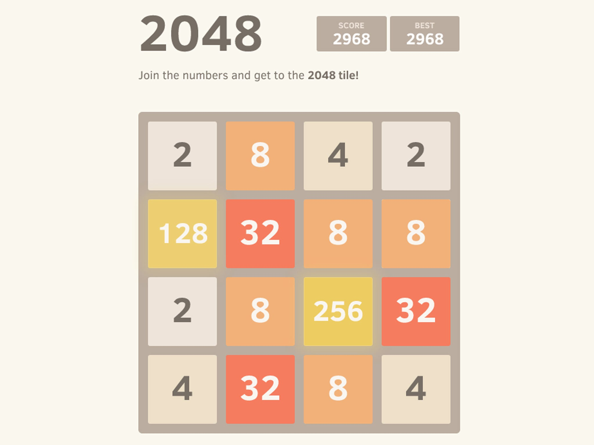

2048
Zasady gry
Przesuwaj palcem (w górę, w dół, w lewo lub w prawo) aby przesunąć płytki znajdujące się na planszy.
Gdy dwie płytki o takiej samej wartości zetkną się ze sobą, złączą się w jedną płytkę o dwukrotnie większej wartości.
Czy dasz radę otrzymać płytkę o wartości 2048?

Oryginalna gra została stworzona przez włoskiego programistę Gabrielego Cirulli.
Tę wersję w ramach projektu zaliczeniowego z przedmiotu Mobilne Aplikacje Webowe
wykonał zespół w składzie: Dominika Limanówka, Kamil Matula i Iwo Różycki.